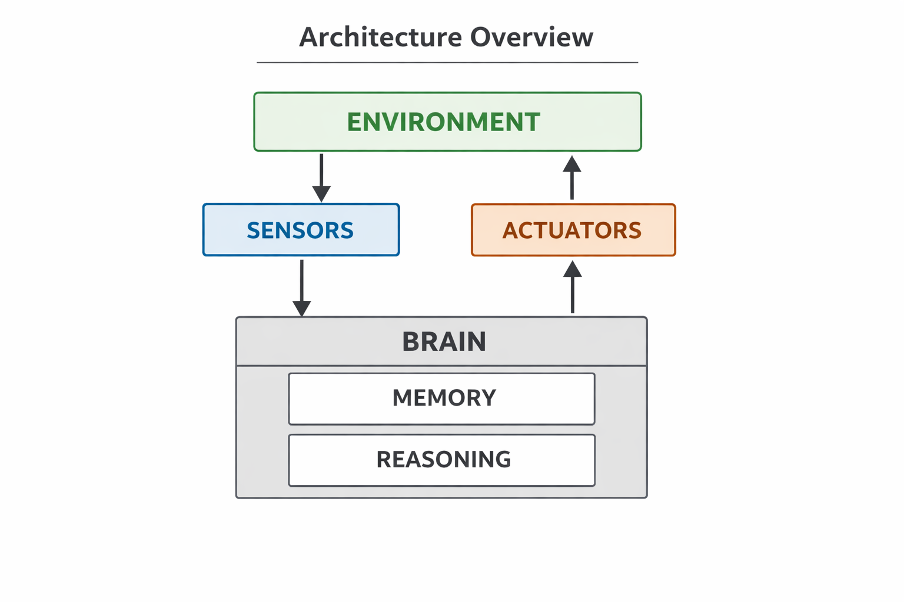
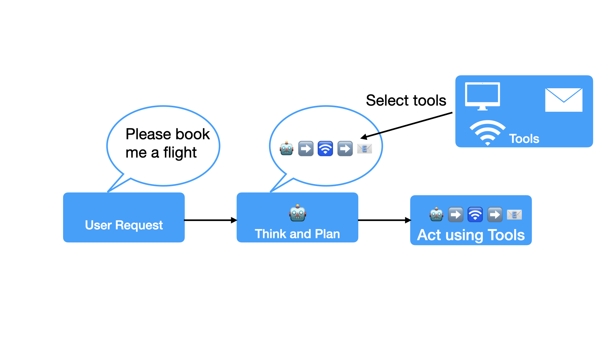

AI Agents#
What Are AI Agents?#
Simple Definition#
An AI Agent is a smart program that can:
Observe
Think
Act
Think of It Like This#
- A calculator is NOT an agent
A smart home assistant IS an agent
WHY?
AI Tool vs AI Agent#
Traditional AI Tool#
You ask → AI answers → Done
Example: You ask ChatGPT a question, it answers, conversation ends.
AI Agent#
Agent watches → Thinks → Acts(repeat)
Example: A calendar assistant.
Key Difference#
Types of AI Agents#
Level 1: Simple Agents#
Thermostat:
Sense: Is it too cold?
Think: Temperature below setting
Act: Turn on heat
Level 2: Smarter Agents#
Netflix Recommendations:
Tracks what you watch
Learns your preferences
Suggests new shows
Adapts over time
Level 3: Advanced Agents#
Self-Driving Cars:
Constantly sensing environment
Planning routes in real-time
Safe navigation
Adapting to traffic
How Do Agents Work?#
The Basic Cycle#
1. OBSERVE (What's happening?)
↓
2. THINK (What should I do?)
↓
3. ACT (Do something!)
↓
4. OBSERVE RESULTS (What happened?)
↓
(Repeat continuously)
Real Example: Weather Alert Agent#
OBSERVE: Checks weather forecast every hour
THINK: “Will it rain tomorrow?”
ACT: Sends you a notification
OBSERVE: Continues monitoring
Key Components of Agents#

The Three Parts#
1. Sensors (How it gathers information)
Read emails
Check databases
Monitor weather
Listen to voice
2. Brain (How it thinks and remembers)
Processes information
Makes decisions
Remembers past events
3. Actuators (How it takes action)
Send messages
Update databases
Control devices
Display information
ReAct: How Modern Agents Think#
ReAct = Reasoning + Acting
Modern AI agents combine thinking (reasoning) and doing (acting) in a loop — just like humans solving problems.
The ReAct Pattern#
Thought → “I need to find out the weather.”
Action → Search for weather in New York.
Observation → “It’s 72°F and sunny.”
Thought → “Now I can answer the user.”
Action → Reply: “It’s 72°F and sunny in New York!”
Using Tools with an Agent?#
Tools give Agents capabilities they don’t have naturally.
Examples of tools:
- Calculator (for math)
- Web search (for finding information)
- Database query (for getting data)
- Email sender (for communication)
- File reader (for documents)
- Weather API (for forecasts)
The magic: Agent decides WHICH tool to use WHEN
Putting It Together#
User Question
↓
LLM (Brain) reads question
↓
LLM decides
↓
Tool runs and gives result
↓
LLM reads result
↓
LLM generates final answer
Lets see an example#
WingmanAI Agent#
Imagine WingmanAI receives a command, such as:
“Wingman, please book me a flight to Italy.”
Because Wingman understands natural language, it immediately grasps the request.
Reason and Plan#
Before acting, Wingman begins reasoning and planning, identifying the necessary steps and tools it needs to:
Check available flights
Compare prices and times
Select the best option
Book the flight
Send the confirmation
Use Tools#
With a clear plan in mind, Wingman takes action.
It uses tools available to it, like:
Flight search APIs
Booking services
Email tools
Wingman uses the flight search tool to find the best options, then completes the booking on the selected airline’s platform.
Complete the Task#
Finally, WingmanAI sends us the confirmation email and itinerary.

Agents Components#
The Brain (AI Models):
Handles reasoning, planning
Decide Actions based on the situation.
Uses tools to complete tasks.
The Body (Capabilities and tools)
Provides the necessary tools for the agent to act.
Reasoning, Planning and Actions#
AI Agents Workflow#
Agents work in a continuous cycle of Thinking –> Acting –> Observing.
Think: The LLM part of the Agent decides which step to take
Act: The Agent uses the tools available to it to perform the action
Observe: The model reflect on the response from the tool
The rule are embedded directly in the prompt:
You are a helpful AI assistant. Your task is to answer user questions. You have access to the following tools:
{tools}
Use the following format:
Question: the input question you must answer
Thought: you should always think about what to do
Action: the action to take, should be one of [{tool_names}]
Action Input: the input to the action
Observation: the result of the action
... (this Thought/Action/Action Input/Observation can repeat N times)
Thought: I now know the final answer
Final Answer: the final answer to the original input question
Begin!
Question: {input}
Thought:{agent_scratchpad}'
The Role of Memory#
Why Memory Matters#
Without memory:
User: "My name is Alex"
Agent: "Nice to meet you!"
User: "What's my name?"
Agent: "I don't know" ❌
With memory:
User: "My name is Alex"
Agent: "Nice to meet you!" [stores: name=Alex]
User: "What's my name?"
Agent: "Your name is Alex!" ✅
Types of Memory#
Short-term (Working) Memory:
Remembers current conversation
Like your brain during a single conversation
Lost when conversation ends
Long-term (Persistent) Memory:
Remembers across conversations
Like your brain remembering a friend’s birthday
Stored permanently (until deleted)
Semantic Memory:
General knowledge
Facts about the world
Built into the model
Memory Makes Agents Better#
Example: Shopping Assistant
Without memory:
“Show me shoes” every time
With memory:
Remembers you wear size 42
Knows you prefer Nike
Recalls you’re looking for running shoes
Shows relevant options immediately
Real-World Examples#
1. Customer Service Agent#
What it does:
Reads customer message
Understands the question
Checks order database
Finds order status
Responds with helpful information
Creates support ticket if needed
Tools it uses:
Order tracking system
Customer database
Email sender
Ticket creation system
2. Research Assistant#
What it does:
Reads your question
Searches multiple websites
Summarizes information
Gives you an answer with sources
Tools it uses:
Web search engine
Document reader
Summarization tool
Citation formatter
3. Personal Scheduler#
What it does:
Monitors your calendar
Suggests meeting times
Sends reminders
Reschedules when conflicts arise
Tools it uses:
Calendar API
Email client
Reminder system
Time zone converter
Common Challenges#
What Can Go Wrong?#
Problem 1: Agents Get Confused
Unclear tool descriptions
Too many options
Solution: Give clear tool descriptions, be specific
What Can Go Wrong?#
Problem 2: Too Many Steps
Complex tasks take too long
Agent loses track
Solution: Keep tasks simple, break into smaller ones
What Can Go Wrong?#
Problem 3: Agents Make Mistakes
Wrong tool selection
Incorrect reasoning
Solution: Always test thoroughly, have human review
Popular Frameworks#
LangChain
AutoGPT
OpenAI Assistants API
AI Agent Conclusion#
PROS:#
Advanced Reasoning and Language Understanding
Autonomous Task Completion
Tool Use Integration
CONS#
Limited generalization to complex tasks
Security and Safety Risks